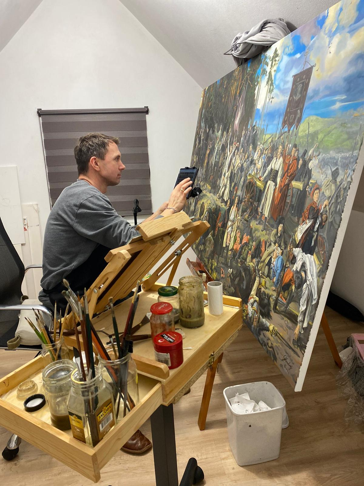

Przestrzenność
Zależy mi na przestrzenności. To jedna z cech, przez które opisuję własne malarstwo.
O artyście
Nazywam się Grzegorz Kozdrój i maluję olejem na płótnie. Zaczynałem hobbystycznie 20 lat temu, z dużymi przerwami, a od kilku lat zajmuję się malarstwem profesjonalnie. Jestem samoukiem.

Biografia
Nazywam się Grzegorz Kozdrój, zajmuję się malarstwem techniką olejną na płótnie. Maluję od 20 lat hobbystycznie, z dużymi przerwami, a od ostatnich kilku lat profesjonalnie.
Najczęściej maluję portrety, pejzaże, kopie sławnych malarzy i obrazy sakralne. Tworzę również własne, autorskie obrazy.
W swoich obrazach pragnę przedstawić piękno, które sam Bóg umieścił w każdym swoim stworzeniu — w świecie, przyrodzie, zwierzętach i samym Człowieku.
Moje obrazy charakteryzują się przestrzennością, żywą barwą i detalem. Z wykształcenia nie jestem artystą plastykiem.
Jestem samoukiem, malarzem, który zrozumiał, że talentu i zamiłowania do malarstwa nie można zmarnować.
Maluję swoje obrazy intuicyjnie i prosto z serca.
Podejście
Zależy mi na przestrzenności. To jedna z cech, przez które opisuję własne malarstwo.
Moje obrazy charakteryzuje żywa barwa. Jest dla mnie jednym ze sposobów pokazania piękna, które dostrzegam wokół siebie.
Detal jest jedną z cech moich obrazów. Zależy mi, by był w nich obecny obok przestrzeni i barwy.
Nie mam wykształcenia plastycznego. Jestem samoukiem i rozwijam zamiłowanie do malarstwa, przekonany, że nie powinienem go zmarnować.
Tematyka
Maluję portrety, pejzaże i obrazy sakralne, wykonuję kopie dzieł znanych malarzy oraz własne kompozycje. Różne tematy łączy moje pragnienie pokazania piękna Bożego stworzenia.
Maluję przyrodę i piękno otaczającego świata.
W tych obrazach podejmuję tematy religijne.
Wykonuję kopie dzieł sławnych malarzy.
Maluję ludzi — człowieka także widzę jako część Bożego stworzenia.
“
Maluję swoje obrazy intuicyjnie i prosto z serca.
Kontakt
Obrazy możesz obejrzeć w galerii. Jeśli chcesz zapytać o dostępność pracy, możliwość zamówienia lub współpracy, napisz do mnie albo zadzwoń.